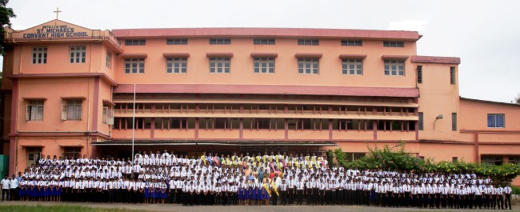

Our Patron
St.Micheal
St.Micheal the archangle is the patron of our school he is the protector of the truth and fights against evil he protects us all in his premises and we are all safe under him
Our Founder
R.F.C Mascarhenes
Father Mascarhenes is titled "servant of god" because of his selfless service.he founded "sisters of the little flower of bethany" and supported girl child education and education of the marginalized
Our Prestigious School
Dandeli comes from the word “Dandakaranya” a thick forest situated on the banks of river Kali in Uttara Kannada Dist. There is a legend that the Pandavas lived in Dandeli during their exile. It is in this forest area that St. Michael’s convent and schools exists. It is at the expressed request of the West Coast Paper Mills, Indian Plywood Factory and the Electro Ferro Manganese Factory, the Bishop of Belgaum Rt. Rev. Dr. Michael Rodriguez approached Mother Macrina, the then Superior General of the Congregation of the Sisters of the Little Flower of Bethany, Mangalore to start an English medium school at Dandeli. During that period the schools were less and the people felt that it was necessary to have a Convent School for educating their children. The industrial growth slowly attracted the people from other places to Dandeli in search of their livelihood and those people who had children were finding it difficult to educate them due to the lack of good English medium schools. The Convent was formally opened on 6 June1962 in a rented room. Sr Lourdes one of the Founding members of Bethany was sent to St Michael’s Convent to help the students in the preparation for the Republic Day celebration. In 1963, the school brought up the first school day and the parents’ day. In 1969 the strength of the school rose to 694 with 12 qualified staff. In 1969 Bethany Educational Society opened Std. VIII, Fr Joseph Koimma being the first Headmaster of the High School. The High school was admitted to grant from the Government of Karnataka from 1974 onwards. In 1975 the High school classes were shifted to Ambewadi. The school was gradually well equipped and furnished and received first time recognition. The steady and continuous increase in number was amazing. In due time, the school was given permanent recognition too. The laborious and dedicated services of many sisters as Headmistress and teachers with the co-operation of parents and well-wishers brought excellent results. Students excelled in sports and co-curricular activities as well. The tireless and dedicated hard work of the sisters and teachers has now turned this school into an enviable centre of learning. Students learn creative methods, inventive skills like running streams. It gives new vitality and creativity. The institution will complete 50 years of service and it will be a golden day!
